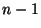

Usage
firstDependence m
Signature
firstDependence: DenseMatrix FractionBy(R, P, irr?) Vector R
| Parameter | Type | Description |
|---|---|---|
| m | DenseMatrix FractionBy(R, P, irr?) | A matrix |
Description
Returns a vector v which contains the coefficients of a dependence relation among the columns of m. The relation is as small as possible, meaning that if v has dimension n then the first  columns of m linearly independent over R. There must be a relation between the columns of. Uses the optmizations described in:
M. Bronstein, T. Mulders & J.A. Weil, On symmetric powers of differential operators, Proceedings of ISSAC'97, ACM Press (1997), 156-163.